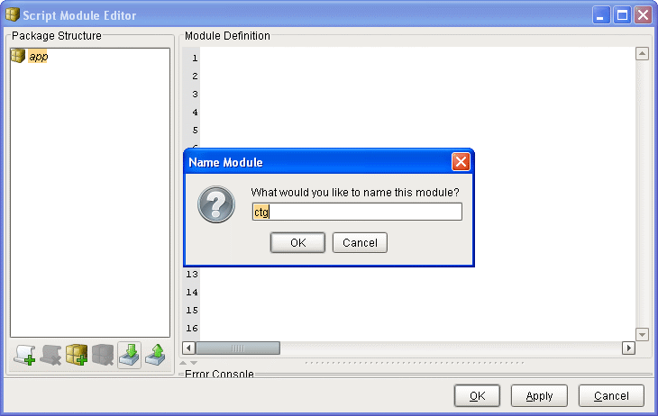
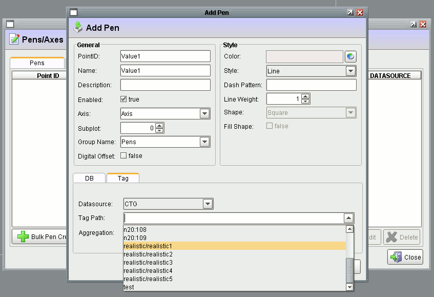
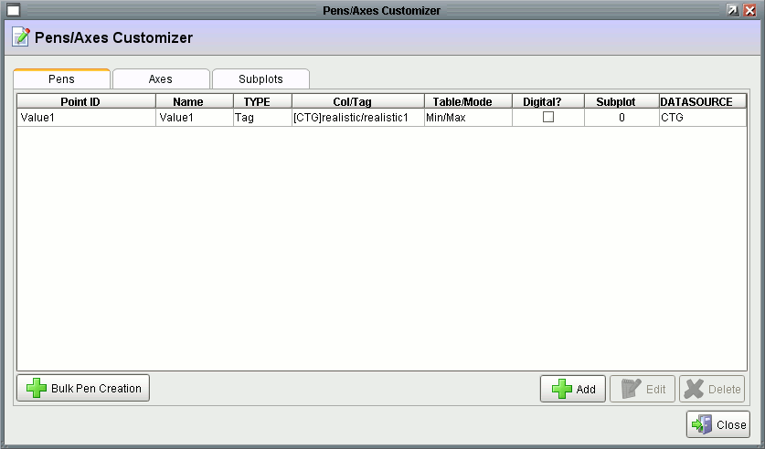

Step 1: Download Click to Graph File
1) Click on the following link to download the zip file:
2) Extract the contents of the
ctg.zip to a folder. This file contains 6 files:
ctg_sqlserver.sql - a SQL Server backup file containing all the necessary tables
ctg_mysql.sql - a MySQL backup file containing all the necessary tables
ctg.py - a python script that contains all the necessary functions
ctg.fpal - a custom palette that contains a few sample components
ctg.vwin - a file that contains all the necessary Ignition windows
ctg_shutdown_script.txt - a file that contains the shutdown script needed
If your database is MySQL, follow these steps:
1) Open up Command Prompt by going to
Start->Program Files->Accessories->Command Prompt
2) Change directory to MySQL bin by entering in (afterwards press enter):
cd "C:\Program Files\MySQL\MySQL Server 5.0\bin"
3) Now import
ctg_mysql.sql by entering in (afterwards press enter):
mysql -u root -p YourDBName < "C:\Location to\ctg_mysql.sql"
4) Enter in your MySQL root password (afterwards press enter)
5) Done. The Click to Graph tables are now successfully imported.
If your database server is SQL Sever, open up the dump file ctg_sqlserver.sql
in Microsoft SQL Server Management Studio, select your database and execute the file.
Step 3: Import Script Module
1) Go to the Ignition Gateway homepage.
2) Open up the Ignition Designer by clicking on the
Launch Designer link. Login with your username and password (default is
admin and
password). Select the project you want to use Click to Graph in.
3) Once open, go to
Project->Script Modules from the menu bar.
4) Click on the
Import a package or script button.
5) Select the
ctg.py file.
6) Name the module
ctg.

7) Done, you now have some global functions that we are going to use later. Press Ok to close.
1) With the designer still open, right click on the
Component Palette and select
Import Palette(s).
2) Select the
ctg.fpal file.
3) Done, you now have some pre-configured components for Click to Graph that we can use.
1) With the designer still open, right click on
Windows inside the
Project Browser and select
Import Window(s).
2) Select the
ctg.vwin file.
3) Done, you now have some pre-configured windows for Click to Graph that we can use.
4) Lastly, you need to add the global shutdown script. Go to
Project->Event Scripts (Client). Next select the
Shutdown tab and enter in the contents of the
ctg_shutdown_script.txt. The script clears out the current graph when the user logs out or closes the client.
All done! Now let's go over how Click to Graph works.
The first part to understand is that Click to Graph stores pen configurations in the database. During the runtime each user picks and chooses from these pens. Picking and choosing these pens manipulates the
ctg_active_client table. This table then drives the Easy Chart's pens/axes datasets dynamically. The ctg_active_client table is based on a unique Client ID created by Ignition when you login to a client. This ID uniquely identifies one client from another. This way each client can have its own set of pens the user can configure. If that ID is somehow lost (possible via redirection), the user must log in again to access the graph.
Let's take a look at the databases tables needed for Click to Graph to work (there are 6 of them):
ctg_pens - table stores all possible pens for the graph.
ctg_axes - table stores all the available axes for the pens.
ctg_subplots - table stores all the available subplots for the pens.
ctg_active_client - table stores all the pens the clients have selected.
ctg_saved_graphs - table stores saved graphs.
ctg_saved_graph_pens - table stores the pens of saved graphs.
The
ctg_pens table can be manipulated using the
CTG_Pen_Edit and
CTG_Pens_Axes windows that we imported into our Ignition project earlier. You can add/edit/remove pens. These pens correspond to tags or items that Ignition (or another historian) is already trending. Attached to a pen is a
Point ID, which uniquely identifies one pen from another. Every Ignition component that we want to use as a Click to Graph item must also contain the Point ID, so that it knows how to add or remove that specific pen.
Next, the actual Easy Chart, located on the
CTG_Graph window, has three expert properties called
DB Pens,
Tag Pens and
Axes which are each bound to a SQL query. The pen datasets are bound to a join of the
ctg_active_client table and the
ctg_pens table. The axes dataset is bound to the
ctg_axes table.
Let's go over a small example to understand how things relate.
Example 1: Using a Click to Graph Component
1) Open up the Ignition Designer.
2) Open up or create a window.
3) From the Component Palette under
CTG Palette, drag and drop the
Multi-State Indicator pre-configured component into the window.
4) You will notice there is a
Dynamic Property called
PointID attached to the component with a value of
HOA. This Point ID must match the Point ID of a pen in the
ctg_pens table.
5) Now, let's take a look at the
Mouse Pressed and Released events on this component. This is where the right click menu is called. So, right click on the component and select
Event Handlers...
6) You will notice the script is the same for the mousePressed and mouseReleased. They both call a global script function that we imported earlier into the Script Modules. We pass the
event object into the showPopup function and it knows how to retrieve the Point ID from the component. The function also takes care of creating the popup menu.
7) Now, cancel out of the event handlers configuration and go into Preview mode in the designer by selecting
Project->Preview Mode from the menu. Now we can interact with the components. Right click on the indicator and you will get the below menu. This is how users will add and remove pens from the Easy Chart.
How to Create and Configure Pens for Click To Graph
It is a good idea to clarify what a pen is. A pen is a row of data stored in a chart dataset that the chart uses to graph a line. A pen is also the line that a chart graphs. Data that makes up a pen includes the source of historical data that is being graphed, display characteristics of the pen and the name of the pen.
In Ignition there are two kinds of pens that can be used in Click to Graph that are distinguished by how the historical data is stored.
1. The historical data of a database pen comes from a column in a database table.
2. The historical data of a historical tag pen comes from the historical logging of a SQLTag.
Before pens can be used by Click to Graph they must be stored in the
ctg_pens database table. Several windows exist for the purpose of viewing, adding and editing pen information in the
ctg_pens database table. Also, a couple windows are used to add/edit information for axes and subplots.
CTG_Add_Pens - window is used to view pens and add and remove pens from the Easy Chart. (Adds and deletes pens from the ctg_active_client database table.)
CTG_Pens_Axes - window is used to view pens, view pen axes, view pen subplots and to delete these and to navigate to other windows that can edit or add these.
CTG_Pen_Edit - window is used to add or edit pen data in the ctg_pens database table.
CTG_Bulk_Pen_Creation - window is used to add many historical tag pens to the ctg_pens database table.
CTG_Axis_Edit - window is used to add or edit pen axes in the ctg_axes database table.
CTG_Subplot_Edit - window is used to add or edit subplots in the ctg_subplots database table.
Below is an example using these windows to configure and add a historical tag pen. Be sure that one or more SQLTags have historical logging enabled, as otherwise there will be no historical tag pens to add.
Example: Creating and Configuring Pens
0) Open up the Ignition Designer, put it in Preview Mode:
Project->Preview Mode and enable full read/write gateway communication:
Project->Comm Read/Write.
1) Open the window
CTG_Add_Pens.
2) Click on the
Edit Pens button which opens the
CTG_Pens_Axes window.
3) Click on the Axes tab and then click on the
Add button. This opens the
CTG_Axis_Edit window. Fill in the axis information and click on the
Add Axis button. This creates an axis.
4) Switch to the Pens tab and click the
Add button. This opens the
CTG_Pen_Edit window. Fill in the fields of the General and Style sections as needed. Select the Tag tab and the datasource where your historical tags are. Clicking on the little arrow box in the far right of the Tag Path field provides a list of all historical tags in the selected datasource. Choose a historical tag from this. Choose the Min/Max aggregation mode. Click on the
Add Pen button and then close the screen.

5) Well done. You should now see the pen you added in the
CTG_Pens_Axes window. The PointID of this pen can now be used as the value of the PointID dynamic property of a component to associate the component with the pen.

1) Right click on a component and select
(+) Add to Graph to add that pen to the current working graph. After that, you can remove the pen and even clear out the current graph.
2) To see the current graph, just open up the
CTG_Graph window.
So, if you would like to add Click to Graph to already existing components do the following:
1) Right click on the component and select
Component Customizers->Dynamic Properties and add a new property named
PointID of type
String.
2) Add the following script in the
mousePressed and
mouseReleased events by right clicking on the component and selecting
Event Handlers..:
if event.button != event.BUTTON1:
app.ctg.showPopup(event)